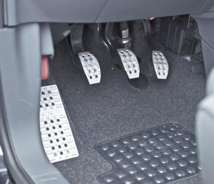
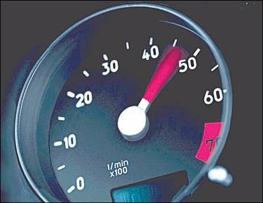
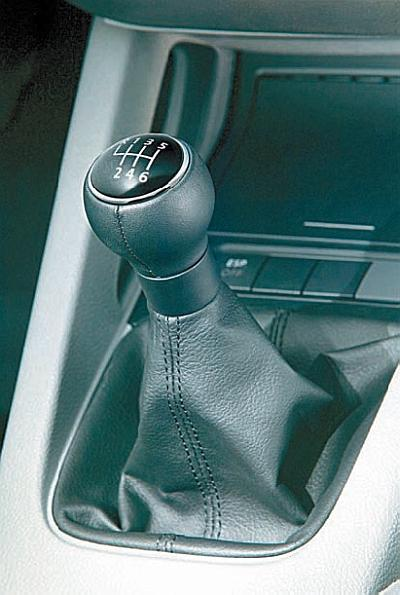
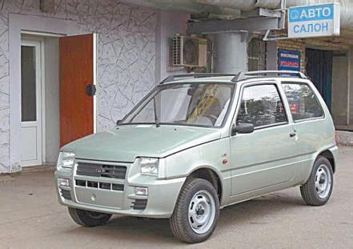

Как научиться «чувствовать» автомобиль.
Обычно опытный водитель чувствует свой автомобиль, как говорится, как самого себя, ощущая себя и машину чуть ли не единым целым. Однако новички на дороге обычно неповоротливы, неуверенны в себе, медлительны, и иногда складывается впечатление, что не водитель управляет машиной, а машина водителем. Справедливости ради отметим, что на первых порах это вполне нормально и объяснимо. Однако затягивать «адаптационный» период не следует: дорога ошибок не прощает.
Умение чувствовать автомобиль складывается из двух составляющих: работы с органами управления и определения габаритов автомобиля. Рассмотрим более подробно каждый из этих элементов.
Как уже отмечалось выше, ни один новичок не обходится без того, чтобы его машина хотя бы несколько раз не заглохла при трогании с места. Это наиболее характерный пример, показывающий, что человек не «чувствует» органы управления автомобиля (что на начальном этапе вполне объяснимо). В первую очередь это касается педалей газа и сцепления: ведь именно ими манипулирует водитель при начале движения (рис. 1.4). Только после нескольких тренировок удается более или менее прочувствовать момент, когда сцепление начинает «схватывать», но при этом необходимо еще уметь плавно отпустить педаль и увеличить подачу топлива настолько, насколько это необходимо.

Рис. 1.4. Каждый водитель должен уметь работать с педалями
Многие новички также испытывают затруднения при работе с рулевым колесом. Яркий пример – попытка разворота: даже при достаточной ширине проезжей части неопытный водитель может упереться колесами автомобиля в бордюр на противоположной стороне дороги. Почему? Да потому, что он либо слишком мало повернул влево руль, либо делал это недостаточно энергично и запоздал.
Научиться чувствовать рулевое колесо можно, поработав с ним для начала на стоящем автомобиле (мотор можно завести, потому что гидравлический усилитель рулевого управления функционирует только при работающем двигателе), а затем – сделать несколько маневров на малой скорости на какой-нибудь пустынной дороге. Попробуйте на скорости примерно 5–10 километров в час выполнить разворот, левый и правый поворот, потренируйтесь манипулировать рулевым колесом при езде задним ходом. Уже после нескольких тренировок вы почувствуете, что управляетесь с рулем более или менее уверенно и знаете, когда, насколько и с какой энергичностью необходимо повернуть рулевое колесо для выполнения того или иного маневра.
Очень важно уметь правильно и грамотно обращаться с рычагом переключения передач. Для этого необходимо «чувствовать» двигатель своего автомобиля и, как говорят водители, «ловить» его обороты. Например, на одной машине вторая передача позволяет разгоняться до скорости 60 километров в час, а на другой – только до 40. Если двигатель слишком громко работает, а коленчатый вал вращается со скоростью свыше 2500–3000 оборотов в минуту, настал момент перехода на повышенную передачу. Если этого не сделать, двигатель будет потреблять больше топлива, а его детали и механизмы будут изнашиваться намного быстрее.
СОВЕТ
Если вам пока еще трудно определить, с какой скоростью вращается коленчатый вал двигателя и, в частности, когда пора переходить на следующую передачу, используйте специальный прибор – тахометр (рис. 1.5). Он имеется в каждой машине на панели приборов. Изучите также руководство по эксплуатации своего автомобиля: там должна быть таблица, в которой указано, на какой предельной скорости можно ехать на каждой передаче и когда рекомендуется переходить на повышенную или пониженную передачу.

Рис. 1.5. Тахометр
В этом смысле более привлекательными выглядят автомобили, оснащенные автоматической коробкой переключения передач. Правда, очень многие опытные водители не любят такие машины и предпочитают ездить на автомобилях с механической коробкой (рис. 1.6). Главный их аргумент – как раз то, что «механика» позволяет гораздо лучше «чувствовать» автомобиль.

Рис. 1.6. На современных авто ставят «механику» с 6 передачами
Что касается габаритов автомобиля, то здесь дело обстоит несколько сложнее. Если с органами управления при регулярной езде вы научитесь свободно обращаться через месяц-другой, то по-настоящему чувствовать габариты машины вы сможете намного позже. Правда, многое зависит от условий езды и мест парковки. Например, если вы каждый день ездите на работу по узкой дороге с одной полосой движения в каждом направлении и вам приходится утром и вечером с трудом парковаться, втискиваясь в узкое место между стоящими рядом машинами, – вы очень скоро почувствуете, что являетесь с машиной чуть ли не единым целым. С другой стороны, если постоянно ездите по широкому проспекту с несколькими полосами движения в каждом направлении, возле офиса достаточно места для свободной парковки, а вечером ставите машину просто возле бордюра или на обочине проезжей части, вы можете проездить всю жизнь, а по-настоящему габариты машины так и не прочувствовать (рис. 1.7).

Рис. 1.7. Габариты небольшого авто «чувствуются» лучше
При движении задним ходом (например, при заезде в гараж или при диагональной парковке задним ходом между стоящими параллельно обочине автомобилями) полезно знать о таком понятии, как точка безопасного поворота, и уметь пользоваться ею. Она имеется на любом транспортном средстве и определяется следующим образом: от глаз водителя необходимо провести прямую линию к правому заднему колесу автомобиля. Поскольку правое заднее колесо водитель не видит, то место, в котором эта линия пересекается с кузовом машины, и является точкой безопасного поворота. Когда, например, вы паркуетесь задним ходом между стоящими параллельно обочине (бордюру) автомобилями, то поворачивать руль вправо следует тогда, когда эта точка поравняется с задним левым углом передней машины. Здесь вы не ошибетесь – это проверено.
Чтобы лучше чувствовать габариты автомобиля, по мере возможности обращайте внимание на положение его углов относительно других предметов при выполнении разных маневров. Например, если вы учитесь заезжать задним ходом в гараж, постарайтесь запомнить, в каком месте находится левый или правый задний угол машины относительно ворот (соседнего гаража, стоящего рядом столба) в тот момент, когда нужно выворачивать руль или выравнивать колеса. Ищите подобные ориентиры и в других местах, в которых приходится выполнять сложные маневры или парковаться, – и вы быстро научитесь чувствовать габариты машины.